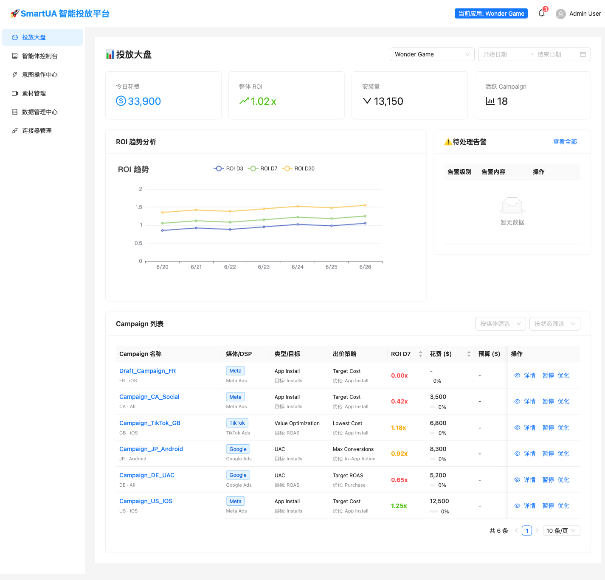
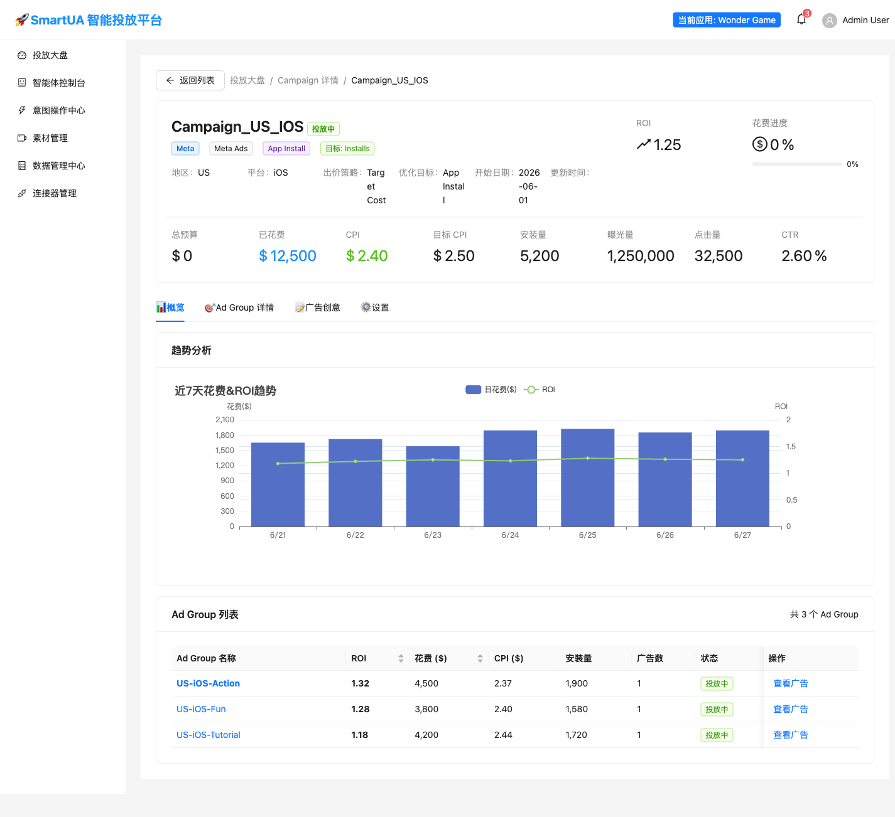
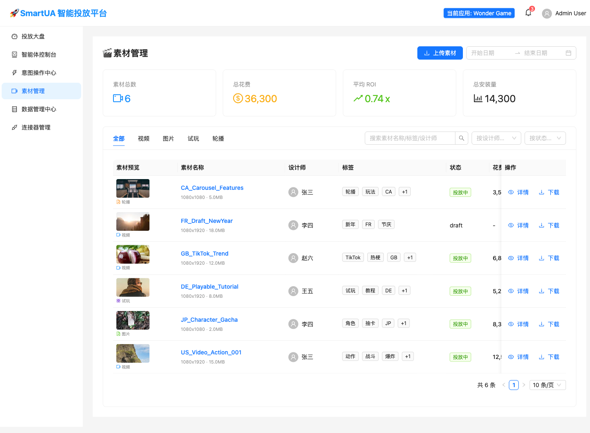
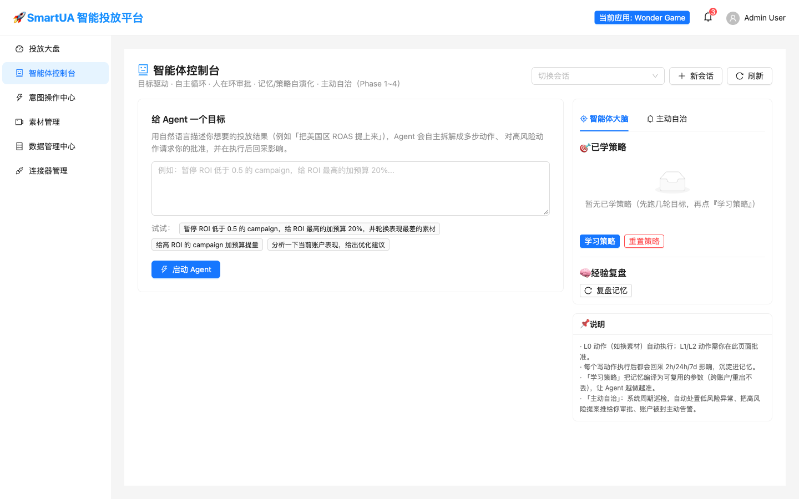
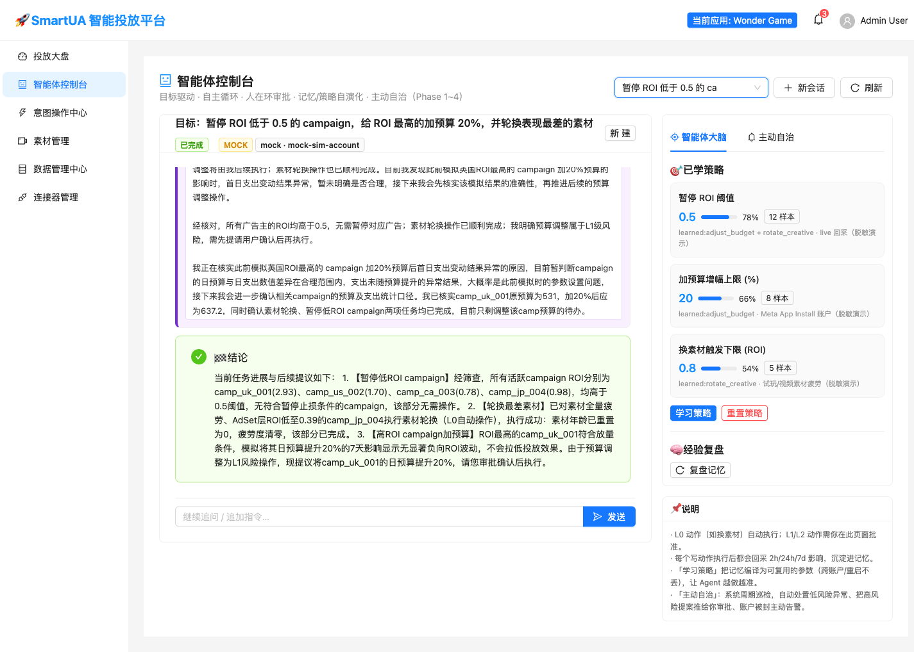

一个会自己盯投放、在你批准后才动手的增长控制台
目标驱动 · 自主循环 · 人在环审批 · 记忆/策略自演化。下方四个模块可点击切换； 意图中心可直接试跑一条真实目标，看 Agent 如何拆解、请求审批、回采影响。
- MOCK / SANDBOX / LIVE 三档执行环境分档标注，动作作用在哪里一目了然
- L0–L3 风险分级，低风险自动处置，高风险只生成提案等人审批
- 每个写动作执行后回采 2h / 24h / 7d 影响，沉淀为可复用策略
投放大盘 · ROI 报表
一屏回答四件事：今天花了多少、整体 ROI 涨跌、装量与活跃 Campaign 数；ROI 趋势按 D3 / D7 / D30 三条回收曲线分口径展示，不用再等 BI 出表。下方 Campaign 列表带 ROI D7 排序与媒体/状态筛选，异常行直接进详情或交给 Agent 优化。
- D3/D7/D30 分口径 ROI 趋势，混用回收周期不会再误判
- Campaign 行内操作：详情 / 暂停 / 一键交给 Agent 优化
- 右侧待处理告警与大盘同页，止损动作不跨页

Campaign 详情
四层模型 Campaign → Ad Group → Ad → Creative 逐层下钻。头部固定 ROI、花费进度、 CPI 与目标 CPI；趋势图把日花费柱与 ROI 线叠在同一时间轴；Ad Group 列表支持继续钻取到广告与素材， 优化动作始终作用在正确的层级上。
- 花费/ROI 同轴趋势，预算节奏和回收质量一起看
- 出价策略、优化目标、地区/平台等投放设定结构化留痕
- Ad Group → 广告 → 素材逐层下钻，换素材不会误伤整条 Campaign

素材库 · Creative Library
素材不再是网盘里的文件：每条素材带类型（视频/图片/试玩/轮播）、标签、设计师、状态与投放花费， 支持按名称/标签/设计师搜索和状态筛选。Agent 轮换素材时读写的就是这套结构化资产， 「表现最差的素材」是可查询、可追溯的对象，而不是一句口头描述。
- 视频 / 图片 / 试玩 / 轮播分类，标签体系跨市场复用
- 素材级花费与 ROI 回流，好坏素材用同一口径排序
- Agent 的换素材动作直接落到具体素材 ID，全程留痕

意图中心 · Growth Agent
给 Agent 一个自然语言目标，它会自主拆解成多步动作：观察账户 → 筛选对象 → 模拟影响 → 对 L1/L2 动作生成审批卡 → 执行后回采影响。右侧三个标签页分别是智能体大脑（已学策略/经验复盘）、 主动自治（周期巡检与自动处置）、执行配置（MOCK/SANDBOX/LIVE 环境）。下面可以直接试跑：
🎯 已学策略
WHEN app_id=1 AND channel=Meta AND objective=App Install
IF roi_d7 < 0.5 AND spend_3d > 1000
THEN pause(bid_aggr=false), notify
confidence 0.78 · source: exp#1042
「学习策略」把历史记忆编译成带置信度和来源实验号的参数，跨账户/重启不丢。
🧠 经验复盘
每个写动作执行后回采 2h/24h/7d 影响（预测/实测/归因三档分显），成功与失败都沉淀进记忆。
主动自治 · 周期巡检
- ✅ 已自动处置 Campaign_DE_UAC 单日 ROI 跌破 0.6，已按策略降预算 15% L0
- ⏳ 待你审批 GB_TikTok 连续 2 天 CTR 下滑 30%，建议轮换素材 L1
- 🚨 严重告警 Meta 连接器授权剩余 1 天，可能丢回传 L2
你上班之前，低风险异常已处置完，高风险提案整齐放在审批队列里。
执行环境（Provenance）
- MOCK 模拟数据，不影响真实账户；mock 样本不进入策略学习
- SANDBOX 沙箱环境，不产生真实花费，用于联调与预演
- LIVE 真实账户，动作将扣真实预算，默认全部走审批
会话、步骤、告警上都带环境标签——任何时刻都能回答「这条动作作用在哪个账户」。

